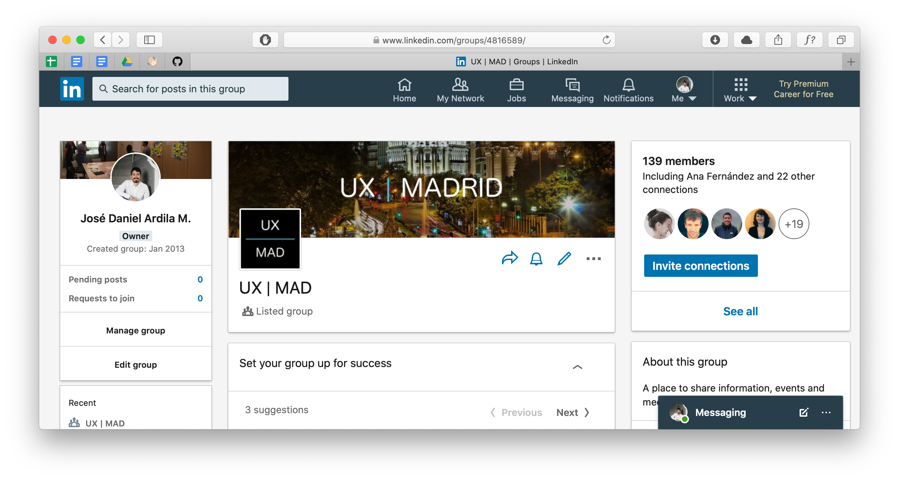

I moved to Madrid on 2011 and didn’t know much people in the city. I worked on digital products for some time, but I didn’t know anyone here. I tried different ways to enter the “scene” but it didn’t work out so well.

UXMAD a group for UX Designers in MadridLocal events
Madrid has its fair share of local events about Design, User Experience, Customer Experience and Digital products. Here is a list of some of those in case you are interested:
- 04x10 (No longer active)
- Ladies that UX: Madrid
- Play Restart
- UX Academy
- UX Fighters
I attended some of these events planning to meet people, collaborate and maybe find job opportunities in the future. Apparently most people already know each other, and after a while I noticed that there wasn’t much rotation in the speakers lineup. So I stoped attending.
Other ways to network
That doesn’t mean I gave up. I looked for other ways to stay in the loop and I decided to take the matter in my own hands. I did not start a “UX and Ribs” meetup, but I did create a group on LinkedIn for UX professionals in Madrid. It’s gaining some traction and there are some job posts from time to time but people are still a bit shy when it comes to posting.
Join us
The more the merrier, so please join, introduce yourself, ask questions and make some friends, thats why I created it in the first place. If you want to join here is the link: